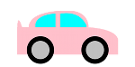

Alunos indentificam situações do mundo real que precisariam de uma estrutura de dados
Alunos fazem uso de uma estrutura complexa de dados: Carro
Alunos definem variáveis vinculadas à carros
Alunos escrevem um código que extrai cada campo de um carro
Alunos definem funções que produzem um carro
Standards and Evidence Statements:
Standards with prefix BS are specific to Bootstrap; others are from the Common Core. Mouse over each standard to see its corresponding evidence statements. Our Standards Document shows which units cover each standard.
Length: 90 minutes
Glossary:
assinatura: uma declaração com o nome, domínio, e imagem de uma função
declaração de propósito: uma breve descrição do que a função faz
definição da função
domínio: o tipo de dado que a função espera receber
estrutura de dados
exemplo: mostra o uso de uma função com entradas específicas e o que a função deve calcular com essas entradas
funções acessadoras
imagem: o tipo de dado que a função produz
nome: como nós nos referimos a uma função ou valor definido na linguagem (exemplos: +, *, star, circle)
nome de variável: nome de uma informação que pode ser diferente cada vez que a função é utilizada
variáveis
Materials:
Lápis/canetas aos alunos, e giz/marcadores de quadro branco aos professores
Cartazes da turma (Lista de regras, conhecimentos básicos, calendário do curso)
Tabela da Linguagem(veja abaixo)
Apostila do aluno com seu nome na capa, e algo para escrever
Sacola de Structs: saco plástico contendo oito cards (2 rotulando "número", 2 "string", 2 "figura", e 2 "booleano")
Preparation:
Escreva a Data no quadro
Mostre cartazes da turma, Tabela de Linguagem, Receita de Projeto
Arranjos de assento: preferencialmente aglomerando as mesas
Alunos aprofundarão sua compreenção sobre definições de funções e da Receita de Projeto
Evidence Statements
Product Outcomes
Materials
Lápis/canetas aos alunos, e giz/marcadores de quadro branco aos professores
Cartazes da turma (Lista de regras, conhecimentos básicos, calendário do curso)
Tabela da Linguagem(veja abaixo)
Apostila do aluno com seu nome na capa, e algo para escrever
Preparation
Escreva a Data no quadro
Mostre cartazes da turma, Tabela de Linguagem, Receita de Projeto
Arranjos de assento: preferencialmente aglomerando as mesas
Revisão
(Time 20 minutos)
Na unidade passada, você revisou quase tudo do Bootstrap 1 incluindo Tipos de Dados, Assinaturas, e a Receita de Projeto.
Nesta unidade vamos além de tudo isso, você aprenderá um novo tipo de dados inteiramente novo que será a base para tudo o que você vai fazer
no Bootstrap 2.
Faça algumas perguntas de revisão para testar o entendimento dos alunos, como:
Quais são as três partes de uma Assinatura?
Qual é o código em racket que desenha um triangulo, sólido, e verde de tamanho 22?
Por que é importante escrever ao menos 2 exemplos antes de definir a função?
Para ver se o conteúdo da última unidade está fresco em sua memória, enfrente a seguinte atividade:
Vá para Page 7 em sua apostila. Escreva uma função chamada dobro-raio,
que recebe um número e uma cor. Ela produz um contorno de um círculo da cor que ele recebeu, mas seu raio
é duas vezes maior do que ele recebeu na entrada.
Você se lembra de como usar a receita de projeto para resolver problemas descritivos?
Passo 1: Assinatura e Declaração de Propósito
Qual é o Nome desta função?
Qual é o Domínio desta função?
Qual é a Imagem desta função?
O que ela faz? Escreva sua Declaração de Propósito descrevendo o que a função deve fazer com suas palavras.
Revise o propósito das Assinaturas: uma vez que sabemos o Nome, Domínio e Imagem de uma função, fica fácil escrever Exemplos usando esses tipos de dados.
Passo 2: Exemplos
Usando apenas a Assinatura e a Declaração de Propósito, veja se você consegue responder as seguintes questões:
Todo Exemplo começa com o nome da função. Onde você poderia encontrar o nome da função?
Todo Exemplo precisa incluir entradas de amostra. Onde você poderia descobrir quantas entradas essa função precisa,
e de tipos elas são?
Todo Exemplo deve incluir uma expressão para o que a função deve fazer com a entrada recebida. Onde
você poderia olhar para descobrir o que essa função faz?
Escreva dois Exemplos no papel, e círcule e nomeie o que está mudando entre eles. Quando nomear,
pense sobre o que essa coisa representa.
Seus exemplos devem ser semelhantes a:
Cada uma das respostas podem ser encontradas na Assinatura ou na Declaração de Propóstito. Sugestão: Escreva esses passos no quadro, e desenhe
setas entre eles para destacar o processo. A objetivo aqui é fazer com que os alunos tenham o hábito de fazerem essas perguntas
por conta própria cada vez que tiverem que escrever exemplos, e em seguida usar seu prórpio trabalho do passo anterior para encontrar as respostas.
Passo 3: Definição
Uma vez que voxê sabe o que está mudando entre os dois exemplos, você pode definir a função facilmente. As coisas que estão circuladas e nomeadas
nos dois exemplos serão substituídas por variáveis na definição de função. (Você não irá sempre querer fazer um círculo
cor de rosa onde o raio é o dobro de 50. Você quer ser capaz de mudar a cor e o raio.)
Debaixo de seus exemplos, copie tudo o que não muda, e substitua as coisas que mudam pelo nome
de variáveis que você usou.
Verifique a compreensão dos alunos: Por que usamos variáveis no lugar de valores específicos? Por que é tão importante ter nomes de variáveis
descritivos, em oposição a n ou x?
Vá para Page 8 em sua apostila. Escreva uma função chamada dobro-largura,
que recebe uma largura e uma cor. A função produz um retangulo sólido, seja qual for a medida
e a cor recebida. A largura dele é o dobro da altura.
Preencha a Assinatura para essa função.
Qual é o Nome dessa função?
Qual é o Domínio da função?
Qual é a Imagem da função?
Usando a Assinatura que você fez, escreva dois Exemplos para essa função.
Qual parte da Assinatura te ajuda a completar o lado esquerdo de um Exemplo?
Qual parte da Assinatura te conta o que a função precisa como Entrada?
Como a Imagem da função te ajuda a escrever um Exemplo?
olhando para os dois exemplos, circule as partes que são mutáveis, e então nomeie com um bom nome de variável.
Por que é útil escolher um nome de variável antes de definir a função?
Agora escreva a definição da função, usando os Exemplos que você ja escreveu.
Este é muito parecido com o problema anterior, e foi pensado para que os alunos sintam-se confortáveis em usar a receita de projeto antes de mergulhar em problemas mais complexos.
Lembre os alunos sobre funções aninhadas: Uma função onde a Imagem é um número pode ser usada dentro de uma função que precisa de um número em seu Domínio, como em
(circle (* 2 25) "solid" "red").
Iniciando com Estruturas
Overview
Learning Objectives
Alunos entenderão as limitações dos tipos de dados atômicos
Evidence Statements
Product Outcomes
Alunos indentificam situações do mundo real que precisariam de uma estrutura de dados
Materials
Sacola de Structs: saco plástico contendo oito cards (2 rotulando "número", 2 "string", 2 "figura", e 2 "booleano")
Preparation
Iniciando com Estruturas
(Time 10 minutos)
Para cada item abaixo, descubra qual tipo de dado você usaria para representar dentro do Racket.
Você usaria um Número, String, Figura ou Booleano para:
uma cor
a figura de um círculo
seu nome
sua idade
se algo está correto ou não
uma coordanada-x
a comida favorita do seu amigo
uma imagem do NinjaCat
um conjunto de coordenadas
Um conjunto de coordenadas precisa de dois números: um x e um y. Infelizmente, funções podem apenas retornar uma parte de dados de cada vez.
Você pode usar uma String para retornar dois números? Não, se você tiver que somar ou subtrair eles! Por que você acha que não podemos usar uma Figura ou Booleano para representar dois Números?
Você pode ilustrar a importância de estruturas com uma atividade: Passe sacolas com cards de tipos de dados, e instrua os alunos a retiratem todos os card das
sacolas, e colocá-los sobre a mesa na frente deles. Liste cada coisa acima, que poderia ser retornada por uma função do Racket, e peça aos alunos para levantar um cartão
para mostrar qual tipo da dado cada um seria.
Toda função que você poderia escrever ou usar no Racket pode apenas te devolver uma coisa. Ou seja, a imagem tem apenas um item nela.
Você precisa de um novo tipo de dado - algo que pode conter mais de uma coisa ao mesmo tempo. O Racket na verdade tem uma ferramenta que pode fazer isso,
que é chamada Estrutura de Dados, ou apenas "struct". Uma struct pode ter vários tipos de dados. Poderia ter dois números,
para representar coordenadas, ou poderia ter quantos números você quiser, como strings, figuras, booleanos e até mesmo outras structs!
(Vamos falar sobre estruturas aninhadas na próxima lição.)
Reserve duas cartas númericas; uma representa o x e outra o y de uma coordenada. Em seguida pegue sua sacola. Coloque os dois cards numéricos
dentro da sacola, e em seguida segure-o. "Quantas coisas eu estou segurando? Uma!"
Agora imagine que você colocou os dois números que representam as coordenadas x e y numa caixa. Se você fosse segurar a caixa, você
estaria segurando apenas uma coisa! Do mesmo modo, estruturas complexas podem ser definidas no Racket para armazenar várias coisas. Olhe mais alguns exemplos,
mas lembre-se que você precisa de uma "struct" para agrupar as coisas.
Quais item abaixo podem ser representados usando apenas um dado (e qual tipo ele é?), e quais precisam de
uma struct para reunir várias partes de dados?
o nome e a idade de um personagem
um sabor de sopa, e se está quente ou não
quantos bichos de estimação você tem
a figura de uma forma geométrica, quantos lados ela tem e sua cor
a direção que um avião está voando, e sua velocidade
No Bootstrap 1,os jogos dos alunos foram feitos para manter o controle de alguns números; a posição-x do perigo e do alvo, e a posição-y
do personagem principal. No Bootstrap 2, os games serão muito mais complexos, e exigirão muito mais valores para mover personagens, testar condições,
ganhar pontos, etc. As Estrutura de Dados simplificam o código organizando muitos valores diferentes: Você não poderia representar cada parte do jogador
(posição, vida, inventário, etc.) com só um número ou string, mas você pode representar todas essas coisas com uma estrutura de dados.
Carros
Overview
Learning Objectives
Evidence Statements
Product Outcomes
Alunos fazem uso de uma estrutura complexa de dados: Carro
Vamos supor que você quer abrir uma Loja de Carros. Você busca e entrega o carro das pessoas, faz pinturas, carrega o turbo deles, etc.
Que tipo de coisa é um carro? É um número? String? Booleano? Você não poderia descrever todas as coisas importantes
sobre um automóvel com apenas uma dessas coisas. Porem, podemos dizer que nos importamos com algumas coisas em nossa loja que podem ser
descritas usando essas tipos.
Para cada um dos seguintes aspectos de um carro, pense sobre qual tipo de dados você poderia usar para representá-lo:
O modelo do carro. Que poderia ser "Rize", "H2", "XTitan", ou algo parecido.
Quantos cavalos de potência o carro tem.
De que tamanho são os aros.
De qual cor o carro é.
O valor do carro, quanto custa.
Qual tipo de dado podemos usar para representar o carro todo?

Vamos representar as diferentes partes de um carro assim:
modelo: String
potencia: Numero
rodas: Numero
cor: String
valor: Numero
Essas são as únicas coisas que você vai acompanhar em um carro, mas você pode imaginar como vocẽ pode extendê-lo para incluir outras coisas.
Agora que você sabe tudo o que é parte de um carro, você pode usar uma struct para representar o próprio carro. (Essa é a primeira vez que
você está usando structs, e elas vão aparecer em uma GRANDE parte de seu jogo.) Vamos dar uma olhada em como isso funciona.
Abra o Autobody Shop arquivo e leia a linha que começa com
(define car1....)(define car1 (make-auto "M5" 480 28 "black" 50000))
Qual é o nome deste carro?
Qual é o modelo deste carro?
Quantos cavalos de potência o car1 tem?
Qual é o tamanho dos aros do car1?
De qual cor o car1 é?
Finalmente, qual é o valor do car1?
Como você pode ver, é realmente fácil fazer uma struct carro! Temos um pouco de código que diz ao computador a ordem de tudo o que entra...
e vamos falar sobre isso em breve. Por agora, vamos praticar definir alguns carros novos.
A primeira linha do arquivo conta ao computador que um carro é uma nova estrutura, e o nome de seus campos.
Abaixo temos três carros definidos e atribuidos às variáveis carro1, carro2, e carro3. Pergunte aos alunos
sobre esses carros para que pensem sobre como eles poderiam definir os seus próprios carros.
Defina outro carro, chamado novo-carro. Para começar
como você definiria essa variável?
Qual função é usada para construir um carro?
O que vem primeiro dentro de uma estrutura carro?
Agora o que você espera que aconteça quando você digitar novo-carro na janela de interações? Clique em Run e experimente.
Peça aos alunos que o conduzam através do processo de definir uma variável chamada novo-carro e fazer um carro de qualquer modelo, potência, tamanho rodas, etc. que eles queiram.
Se eles estão se confundindo em fazer um carro, mande-os checar sua página de assinaturas!
Defina duas novas variáveis de seus carros favoritos. Chame eles de [seuNome]-carro (natan-carro, samuel-carro, julio-carro, etc),
ou outro nome que preferir. Vocẽ pode construir qualquer tipo de carro que quiser, enquanto sua estrutura tiver os tipos certos nas ordens corretas!
Repetição é o ponto chave nesta lição. Peça aos alunos que identifiquem cada parte da struct carro nos carros que eles definiram.
Qual é o modelo do primeiro carro? Seu valor? Verifique se seus alunos estão usando as entradas na ordem correta!
Quando vocẽ definiu seus novos carros, você usou uma nova função? make-carro.
Qual o nome dessa função?
E o seu domínio?
Quantas coisas estão em seu domínio?
As cinco coisas no domínio de make-carro são, na verdade, as cinco
coisas que nós já listamos! Em sua apostila, na página de Assinaturas, vamos escrever:
Lembre os alunos para que copiem as assinaturas em suas apostila, e escreva as assinaturas você mesmo no quadro.
Nas estruturas de dados, a ordem é muito importante: nós sempre queremos que a primeira string em make-carro seja o modelo do carro, o primeiro número
seja sua potência, etc.
Debaixo da assinatura, escreva o que cada parte do domínio de make-carro representa.
Nós sabemos o nome e o domínio, mas e a imagem da função? Se eu der para make-carro uma String representando o modelo do carro, um número para a potência,
outro número para o tamanho das rodas, uma string para a cor, e um número para o valor do carro, o que eu deveria receber devolta? Um Carro! Mas o Racket não tem um tipo
de dado para um carro. Vamos ter que usar uma struct. O Racket não tem carros construídos dentro dele, então logo mais você aprenderá a definir suas próprias
estruturas para usar em SEU videogame.
Carros são o primeiro exemplo de definição de um novo tipo de dados que os alunos viram, mas o Racket lhe permite definir quantas novas estruturas você precisar para guardar
qualquer combinação de valores. Os pontos importantes a serem lembrados sobre structs é que qualquer make-[estrutura] chamada, deve ter o mesmo
número de elementos e os mesmos tipos de dados como na sua definição, e suas entradas devem estar na mesma ordem da definição. A Unidade 3 introduz
os alunos ainda mais nas estruturas, e na Unidade 4 eles começam a definir sua própria struct.
Depois de clicar em "Run", no WeScheme, digite carro1 na janela de interações e aperte enter. O que você recebe devolta?
Isso faz sentido? O que aconteceu quando você digitou um número na janela de interações? Nós recebemos o mesmo número de volta! E se fosse uma string? Uma figura?
Um booleano? Se não fizermos nada com nossa entrada, ou não usamos alguma função nela, nós recebemos exatamente o que digitamos! Se você colocar um carro, você receberá um carro de volta!
Lembre os alunos uqe os valores sempre se resultarão. 4 resulta em 4, a string "pizza" resulta em "pizza", e carro1 resulta em
(make-carro "M5" 480 28 "black" 50000)
Você pode ver como são seus carros usando a função fornecida abaixo da tela. É chamada desenha-carro, ela recebe um carro como entrada e
te retorna uma Figura com seu carro nela.
Na Janela de Interações, digite (desenha-carro carro1) e veja o que acontece. Use a função com os carros que VOCÊ definiu!
Os alunos passarão muito tempo "desenhando" seus carros. Incentive-os a definir alguns carros novos, e alterar sua cor, tamanho das rodas, valor, etc. para verem suas
alterações refletidas nas imagens. Não se esqueça de lembrá-los de clicar em "Run" depois de fazer qualquer alteração!
Funções de Acesso
Overview
Learning Objectives
Evidence Statements
Product Outcomes
Alunos escrevem um código que extrai cada campo de um carro
Materials
Preparation
Funções de Acesso
(Time 10 minutos)
Suponha que você queira OBTER o modelo do novo-carro. Você não se importa com o tamanho das rodas, potência, ou qualquer outra coisa- você só quer
saber o modelo. O Racket tem uma função para isso, chamada carro-modelo. Se você der um carro para carro-modelo, ela retornará modelo
desse carro.
Se você digitar (carro-modelo novo-carro) na janela de interações, o que deveria resultar? Experimente!
Que tipo de coisa retornou: Um número, string, figura, ou uma estrutura(struct)?
Pratique pegando o modelo de TODOS os carros que você ja definiu, usando carro-modelo
Em sua apostila, volte para a página de assinaturas. Pense em que tipo de coisa você dá para a função carro-modelo,
e que tipo de dado você recebe de volta.
Qual o nome dessa função?
Qual o domínio dessa função?
E o seu domínio?
Escreva a assinatura para carro-modelo em sua folha de assinaturas.
; carro-modelo : carro -> String
Claro, existem funções para acessar qualquer parte de um carro, não apenas o modelo! O que você pensa ser a assinatura para carro-potencia?
Escreva em sua apostila.
Escreva as assinaturas para carro-rodas, carro-cor e carro-valor. Em seguida, experimente-os em seus carros! Elas fazer o que você esperou?
Uma maneira de introduzir os alunos a usar essas funções é perguntar: "Como você obtém a potência de um carro?" "Como vocẽ consegue a cor de um carro?"
Ao longo do curso você pode configurar um sistema de pergunta e resposta com os alunos, onde a pergunta "Como você consegue o X de um Y?"
irá solicitar o nome da função acessadora.
As funções anteriores são conhecidas como Funções Acessadoras. Elas permitem que você especifique qual parte da struct você quer, sem
receber toda a estrutura de volta. Se quisermos saber se podemos comprar um carro, nós provavelmente vamos ver ser o valor é menor que
uma certa quantia. Da mesma forma, seu queremos saber se um personagem está morto, só precisamos saber se sua vida é menor do que 0:
para saber disso, no memento não é preciso conhecer sua posição no jogo, ou a cor da dua armadura. Programadores usam muito acessadores, para tornar grandes
partes de dados (como estruturas) mais gerenciáveis.
Tunning Shop
Overview
Learning Objectives
Alunos escrevem funções complexas que consomem, modificam e produzem estruturas
Evidence Statements
Product Outcomes
Alunos definem funções que produzem um carro
Materials
Preparation
Tunning Shop
(Time 25 minutos)
Agora você sabe tudo sobre como trabalhar com carros no Racket!
Qual função constrói um carro?
Qual função desenha um carro?
Como você consegue obter o valor de um carro?
Como você obtém a cor de um carro?
Mas você não quer apenas buscar um carro e devolvê-lo. Você tem uma loja de personalização! Você vai buscar o carro das pessoas e modificá-los,
tornando-os melhor de alguma maneira, e devolvê-lo ao cliente. Vamos descobrir como fazer isso.
Vá para Page 9 em sua apostila. Escreva uma função chamada pintura,
que muda a cor de um automóvel.
Qual é o domínio dessa função? precisamos receber a instrução sobre qual carro vamos pintar,
E qual cor vamos usar.
O que você pensa que nossa loja vai retornar? Qual seria a imagem da função
pintura?
Em seu primeiro exemplo, use o original carro1 e pinte-o de roxo(purple). Nós sabemos que o cliente espera receber o carro de volta: você não levaria seu carro
em uma loja e estar satisfeito em receber só um par de rodas devolta! Mas não retornaremos o mesmo carro- vai estar quase idêntico, mas apenas a cor mudou.
Pode não ser imediatamente óbvio aos alunos quando uma função retorna um carro, eles devem usar a função make-carro para
produzí-lo. Construir um carro força os alunos a pensar sobre cada campo e sua ordem. Pensar sobre o que exatamente
compõe um carro e voltar para a assinatura de make-carro dá a eles muita prática com a estrutura carro e as funções
acessadoras.
no momento que você escrever make-carro, você sabe que deve fornecer cinco coisas: o modelo, a potência, tamanho das rodas, cor, e o valor do carro.
Nós já sabemos qual modelo o carro deve ter: o mesmo modelo que foi recebido! Mas se vocẽ não soubesse exatamente qual string usar.
Como você poderia acessar APENAS o modelo do carro1 e usá-lo em seu make-carro?
Os cavalos de potência também não mudam na pintura. Então como você consegue a potência do carro1?
O tamanho das rodas também não mudam com a pintura. Como você consegue o tamanho das rodas do carro1?
Mas e a cor? Nesse exemplo pintura está recebendo o carro1 e a string "purple".
Assim, a cor desse carro será "purple".
Não se esqueça da última parte da struct carro- o valor! A declaração de propósito de pintura não diz nada sobre o valor
do carro mudar, então como você consegue o valor original do carro1?
Escreva mais um exemplo para a função pintura, desta vez usando para pintar o carro2 de verde.
Circule e nomeie o que muda entre os dois exemplos. De quantas variáveis essa função precisa?
Escreva a definição, usando os exemplos para te ajudar.
Depois de substituir as coisas que mudam pelas variáveis, sua definição deve ser semelhante a essa:
Os alunos podem ser tentados a colocar a cor entre aspas, porque a cor do carro deve ser uma string. No entanto, o domínio
de pintura nos diz que a função recebe um carro e uma string, então qualquer cor que recebermos já estará
entre aspas. Valores resultam neles mesmos, então a string "cor" não pode resultar em outra coisa a não ser "cor".
Se quisermos que a cor seja uma variável, ou um atalho para "purple", "green", "blue", etc, é preciso que sejam escritas SEM aspas.
Vá para Page 10 em sua apostila. Quando você coloca turbo em um motor, ele tem
mais força. Sua loja oferece um serviço de colocar turbo nos carros que aumenta em 20 cavalos a potência, mas todos o
resto se mantém igual.
Preencha a Assinatura e a Declaração de Propósito para a função.
Escreva dois Exemplos de como você usaria a turbocharge.
Circule e nomeie o que varia entre esses exemplos com nomes de variáveis.
Defina a função.
Dê aos alunos tempo suficiente para praticar o uso das funções acessadoras, extrair partes da Estrutura Carro e modificá-las.
Closing
Overview
Learning Objectives
Evidence Statements
Product Outcomes
Materials
Preparation
Closing
(Time 5 minutos)
Estruturas são uma poderosa ferramenta para representar dados complexos em um programa. Simples jogos, como Pong, precisam apenas
acompanhar alguns números de cada vez, como a posição da bola, posição de cada plataforma e os pontos. Mas se um jogo tem muitos
inimigos diferentes, casa um com sua própria posição e vida, ou muitas fases com diferentes imagens no fundo, o jogo pode ficar
complicado muito rápido, e as structs são uma ótima maneira de gerenciar e cuidar de todos os dados. Progrmadores podem fazer MUITO com
estruturas de dados, e nas próximas aulas você vai criar suas próprias estruturas para fazer um game personalizado.